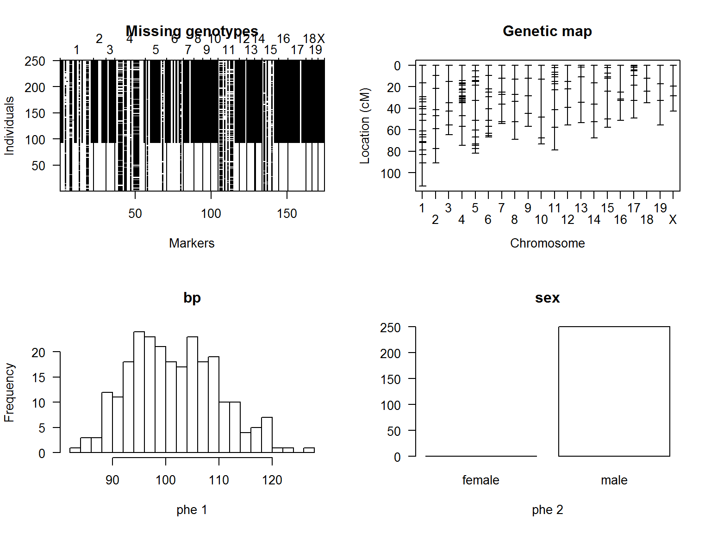
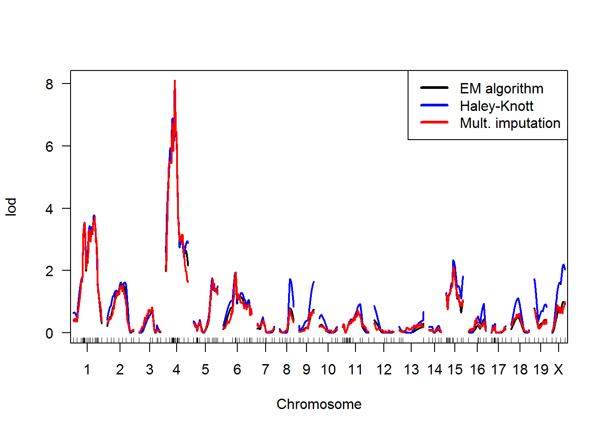
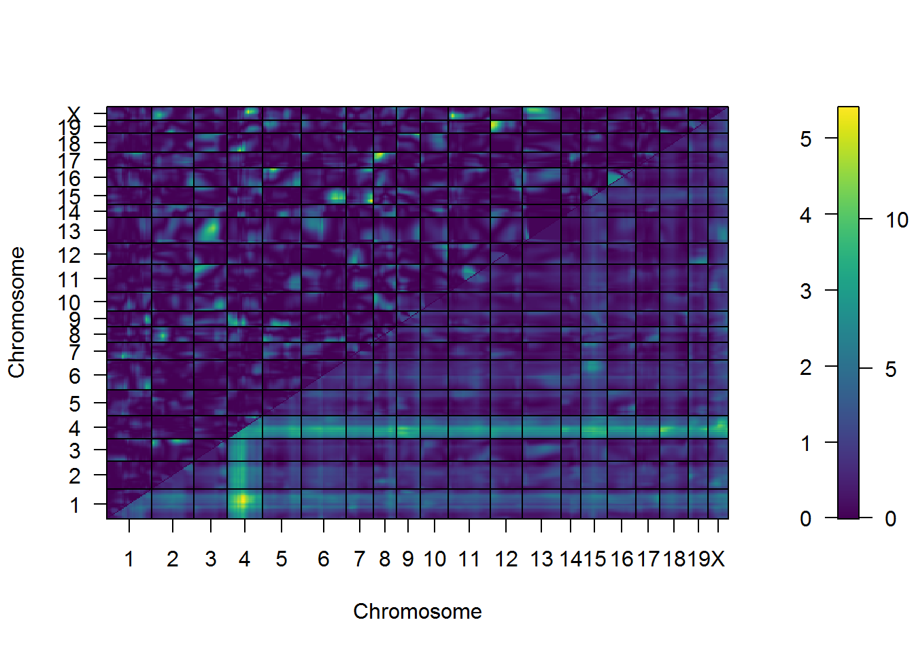

2 Quantitative Genetics
2.1 QTL analysis
Quantitative Trait Loci (QTL) are regions in the genome that are associated with variation in a quantitative trait. Quantitative traits are phentoypes that can be measured on a continuous scale, like height, weight, etc.
QTL analysis (or QTL mapping) is typically done on experimental populations to find genes which contribute to the heritability of traits. Phenotype and genetic marker data are collected from every individual in the population. The general concept of QTL mapping is that we can then calculate the correlation between genotypes and phenotypes at each marker position and test whether they show a statistically significant association.
Let’s consider the famous example of Doebley and Stec (1991), who assessed the variation of traits that discriminate commercial maize from its native relative teosinte. Teosinte is much smaller than maize as we know it today and one teosinte plant produces many ears, each of which has only two rows of seeds. But even though maize and teosinte look so completely different, they are still able to produce viable offspring together. Doebley and Stec (1991) utilized this and crossed the two plant species to produce an F1 generation, which were in turn self-pollinated. The resulting F2 population of maize-teosinte-hybrids showed a wide range of intermediate parental morphologies. Each of the F2 offspring was then genotyped at 58 locations in the genome, so that the quantitative trait information on morphology could be correlated with the genetic map. This analysis revealed that most of the morphological variation between maize and teosinte were the result of changes in only a handful of genes, one of which is the tb1 (teosinte branched 1) gene.
2.1.1 Recombinant Inbred Lines (RILs)
RILs are experimental sister populations that have been produced by a very specific back-crossing scheme. The process is similar to Doebley and Stec’s crossing of maize and teosinte: two homozygous parents are crossed to produce an F1 generation. Following the laws of genetics, each offspring’s genome consists of a random combination of parental alleles and crossover (or recombination) events. Depending on the design, F1 offspring are usually either selfed or mated with a sibling to introduce another level of genetic recombination. The final generation is then inbred for many generations to obtain a collection of homozygous sister lines, each with a unique mosaic genome of parental alleles (Pollard 2012).
2.1.2 QTL analysis in R
2.1.2.1 The “qtl” package
The best established R package for QTL mapping is Broman et al. (2003)’s qtl package. It implements several techniques for finding QTLs, like Hidden Markov Models (HMM), interval mapping, Haley-Knott regression and multiple imputation. It is very well documented and comes with extensive example data and code.
Here, I will introduce you to a basic QTL mapping workflow using the examples given in the package documentation and refer you to more complex analysis options where applicable.
Installation and loading the package
If this is the first time you are using the qtl package, you need to install it from CRAN. The following line of code checks whether you already have the package, and if not installs it.
pkg = "qtl"
if (system.file(package = pkg) == '') install.packages(pkg)You can then load the package:
library(qtl)Loading the data
I will be using the example data on murine hypertension that is provided in the package (Sugiyama et al. 2001). The summary() function shows you the main properties of the data:
data(hyper)
summary(hyper)## Backcross
##
## No. individuals: 250
##
## No. phenotypes: 2
## Percent phenotyped: 100 100
##
## No. chromosomes: 20
## Autosomes: 1 2 3 4 5 6 7 8 9 10 11 12 13 14 15 16 17 18 19
## X chr: X
##
## Total markers: 174
## No. markers: 22 8 6 20 14 11 7 6 5 5 14 5 5 5 11 6 12 4 4 4
## Percent genotyped: 47.7
## Genotypes (%):
## Autosomes: BB:50.1 BA:49.9
## X chromosome: BY:53.0 AY:47.0The plot() function produces plots showing missing genotypes, the marker positions and the distribution of phenotypes or traits. This will give you a first idea of your data.
The package manual includes a description of various additional plotting functions, which I won’t cover here. I also advise to examine each object with head() or summary() after you ran a function to get a feel for your data and the various steps you are taking in the analysis.
plot(hyper)
Genetic map estimation
Before we proceed with the analysis, I typically recommend to replace the existing genetic map with an estimated one to reduce the potential errors. The genetic map represents all markers on a chromosome in a linear fashion. The est.map() function applies a Hidden Markov Model (E. S. Lander and Green 1987) to estimate the map with an assumed genotyping error rate (error.prob).
Here, we can also specifiy the mapping function (map.function) that we want to use to convert genetic distance to recombination fraction. The distance between two markers is usually given as a unit of genetic linkage, called centimorgan (cM) One cM represents the distance with an average of 0.01 crossover events in one generation (i.e. 1% recombination). However, this representation of distance underestimates the actual recombination fraction, which is inherently not additive. With increasing distance the chance of double crossovers increases, so that they are in a way “invisible” to the traditional estimation of recombination distance.
Another reason why genetic maps based on recombination are biased is crossover interference, which described the phenomenon that a crossover event reduces the likelihood of another recombination event occur close by.
To correct for such biases, we can choose from the following mapping functions:
- Haldane’s is the simplest mapping function and assumes a Poisson distribution for crossover events and does not consider interference.
- Kosambi’s mapping function also considers interference and double crossovers but it can not calculate joint recombination probabilities for more than three loci.
- Carter-Falconer’s mapping function can be extended to more complex interference rates.
- Morgan’s mapping function assumes complete interference.
The two most widely used mapping functions are Haldane’s (the default) and Kosambi’s. For this example, using Haldane’s should be sufficient. Because our example is a backcross, we can assume no interference, meaning that all crossovers are independent (Lynch and Walsh 1998).
newmap <- est.map(hyper, error.prob = 0.0001, map.function = "haldane")
hyper <- replace.map(hyper, newmap)We can now estimate the recombination fractions between all pairs of markers. The est.rf() function also calculates the LOD scores. LOD stands for “likelihood of the odds” and is a measure of linkage. In QTL mapping we calculate LOD scores for the genetic markers and a threshold, above which we consider a QTL statistically significant in its association with the trait.
hyper <- est.rf(hyper)The calc.errorlod() function calculates the genotyping errors according to Lincoln and Lander (1992).
hyper <- calc.errorlod(hyper, error.prob = 0.0001)Finding QTLs
Now, we can proceed with the central step: mapping the QTLs.
The core of R/qtl is a set of functions which make use of the hidden Markov model (HMM) technology to calculate QTL genotype probabilities, to simulate from the joint genotype distribution and to calculate the most likely sequence of underlying genotypes (all conditional on the observed marker data). This is done in a quite general way, with possible allowance for the presence of genotyping errors. Of course, for convenience we assume no crossover interference. The function calc.genoprob calculates QTL genotype probabilities, conditional on the available marker data. These are needed for most of the QTL mapping functions. The argument step indicates the step size (in cM) at which the probabilities are calculated, and determines the step size at which later LOD scores are calculated.
hyper <- calc.genoprob(hyper, step = 1, error.prob = 0.0001)We may now use the function scanone to perform a single-QTL genome scan with a normal model. We may use maximum likelihood via the EM algorithm (Lander and Botstein 1989) or use Haley-Knott regression (Haley and Knott 1992).
out.em <- scanone(hyper)
out.hk <- scanone(hyper, method = "hk")We may also use the multiple imputation method of Sen and Churchill (2001). This requires that we first use sim.geno to simulate from the joint genotype distribution, given the observed marker data. Again, the argument step indicates the step size at which the imputations are performed and determines the step size at which LOD scores will be calculated. The n.draws indicates the number of imputations to perform. Larger values give more precise results but require considerably more computer memory and computation time.
hyper <- sim.geno(hyper, step = 2, n.draws = 16, error.prob = 0.01)
out.imp <- scanone(hyper, method = "imp")plot(out.em)
plot(out.hk, col = "blue", add = TRUE)
plot(out.imp, col = "red", add = TRUE)
legend("topright", c("EM algorithm", "Haley-Knott", "Mult. imputation"), col = c("black", "blue", "red"), lty = 1, lwd = 3)
The function scanone may also be used to perform a permutation test to get a genome-wide LOD significance threshold. For Haley-Knott regression, this can be quite fast.
operm.hk <- scanone(hyper, method = "hk", n.perm = 1000)## Doing permutation in batch mode ...The permutation output has class “scanoneperm”. The function summary.scanoneperm can be used to get significance thresholds.
summary(operm.hk, alpha = 0.05)## LOD thresholds (1000 permutations)
## lod
## 5% 2.78In addition, if the permutations results are included in a call to summary.scanone, you can estimated genome-scanadjusted p-values for inferred QTL, and can get a report of all chromosomes meeting a certain significance level, with the corresponding LOD threshold calculated automatically.
summary(out.hk, perms=operm.hk, alpha = 0.05, pvalues = TRUE)## chr pos lod pval
## c1.loc96 1 99.3 3.78 0.006
## D4Mit164 4 41.6 8.10 0.000The function scantwo performs a two-dimensional genome scan with a two-QTL model. For every pair of positions, it calculates a LOD score for the full model (two QTL plus interaction) and a LOD score for the additive model (two QTL but no interaction). This be quite time consuming, and so you may wish to do the calculations on a coarser grid. One can also use method=“em” or method=“imp”, but they are even more time consuming.
hyper <- calc.genoprob(hyper, step = 5, error.prob = 0.01)
out2.hk <- scantwo(hyper, method = "hk")## --Running scanone
## --Running scantwo
## (1,1)
## (1,2)
## (1,3)
## (1,4)
## (1,5)
## (1,6)
## (1,7)
## (1,8)
## (1,9)
## (1,10)
## (1,11)
## (1,12)
## (1,13)
## (1,14)
## (1,15)
## (1,16)
## (1,17)
## (1,18)
## (1,19)
## (1,X)
## (2,2)
## (2,3)
## (2,4)
## (2,5)
## (2,6)
## (2,7)
## (2,8)
## (2,9)
## (2,10)
## (2,11)
## (2,12)
## (2,13)
## (2,14)
## (2,15)
## (2,16)
## (2,17)
## (2,18)
## (2,19)
## (2,X)
## (3,3)
## (3,4)
## (3,5)
## (3,6)
## (3,7)
## (3,8)
## (3,9)
## (3,10)
## (3,11)
## (3,12)
## (3,13)
## (3,14)
## (3,15)
## (3,16)
## (3,17)
## (3,18)
## (3,19)
## (3,X)
## (4,4)
## (4,5)
## (4,6)
## (4,7)
## (4,8)
## (4,9)
## (4,10)
## (4,11)
## (4,12)
## (4,13)
## (4,14)
## (4,15)
## (4,16)
## (4,17)
## (4,18)
## (4,19)
## (4,X)
## (5,5)
## (5,6)
## (5,7)
## (5,8)
## (5,9)
## (5,10)
## (5,11)
## (5,12)
## (5,13)
## (5,14)
## (5,15)
## (5,16)
## (5,17)
## (5,18)
## (5,19)
## (5,X)
## (6,6)
## (6,7)
## (6,8)
## (6,9)
## (6,10)
## (6,11)
## (6,12)
## (6,13)
## (6,14)
## (6,15)
## (6,16)
## (6,17)
## (6,18)
## (6,19)
## (6,X)
## (7,7)
## (7,8)
## (7,9)
## (7,10)
## (7,11)
## (7,12)
## (7,13)
## (7,14)
## (7,15)
## (7,16)
## (7,17)
## (7,18)
## (7,19)
## (7,X)
## (8,8)
## (8,9)
## (8,10)
## (8,11)
## (8,12)
## (8,13)
## (8,14)
## (8,15)
## (8,16)
## (8,17)
## (8,18)
## (8,19)
## (8,X)
## (9,9)
## (9,10)
## (9,11)
## (9,12)
## (9,13)
## (9,14)
## (9,15)
## (9,16)
## (9,17)
## (9,18)
## (9,19)
## (9,X)
## (10,10)
## (10,11)
## (10,12)
## (10,13)
## (10,14)
## (10,15)
## (10,16)
## (10,17)
## (10,18)
## (10,19)
## (10,X)
## (11,11)
## (11,12)
## (11,13)
## (11,14)
## (11,15)
## (11,16)
## (11,17)
## (11,18)
## (11,19)
## (11,X)
## (12,12)
## (12,13)
## (12,14)
## (12,15)
## (12,16)
## (12,17)
## (12,18)
## (12,19)
## (12,X)
## (13,13)
## (13,14)
## (13,15)
## (13,16)
## (13,17)
## (13,18)
## (13,19)
## (13,X)
## (14,14)
## (14,15)
## (14,16)
## (14,17)
## (14,18)
## (14,19)
## (14,X)
## (15,15)
## (15,16)
## (15,17)
## (15,18)
## (15,19)
## (15,X)
## (16,16)
## (16,17)
## (16,18)
## (16,19)
## (16,X)
## (17,17)
## (17,18)
## (17,19)
## (17,X)
## (18,18)
## (18,19)
## (18,X)
## (19,19)
## (19,X)
## (X,X)The output of scantwo has class “scantwo”; there are functions for obtaining summaries and plots, of course. The summary function considers each pair of chromosomes, and calculates the maximum LOD score for the full model (Mf ) and the maximum LOD score for the additive model (Ma). These two models are allowed to be maximized at different positions. We futher calculate a LOD score for a test of epistasis, Mi = Mf − Ma, and two LOD scores that concern evidence for a second QTL: Mfv1 is the LOD score comparing the full model to the best single-QTL model and Mav1 is the LOD score comparing the additive model to the best single-QTL model. In the summary, we must provide five thresholds, for Mf , Mfv1, Mi , Ma, and Mav1, respectively. Call these Tf , Tfv1, Ti , Ta, and Tav1. We then report those pairs of chromosomes for which at least one of the following holds: 7 • Mf ≥ Tf and (Mfv1 ≥ Tfv1 or Mi ≥ Ti) • Ma ≥ Ta and Mav1 ≥ Tav1 The thresholds can be obtained by a permutation test (see below), but this is extremely time-consuming. For a mouse backcross, we suggest the thresholds (6.0, 4.7, 4.4, 4.7, 2.6) for the full, conditional-interactive, interaction, additive, and conditional-additive LOD scores, respectively. For a mouse intercross, we suggest the thresholds (9.1, 7.1, 6.3, 6.3, 3.3) for the full, conditional-interactive, interaction, additive, and conditional-additive LOD scores, respectively. These were obtained by 10,000 simulations of crosses with 250 individuals, markers at a 10 cM spacing, and analysis by Haley-Knott regression.
summary(out2.hk, thresholds=c(6.0, 4.7, 4.4, 4.7, 2.6))## pos1f pos2f lod.full lod.fv1 lod.int pos1a pos2a lod.add
## c1 :c4 78.3 45.0 13.72 6.64 0.228 78.3 45.0 13.49
## c2 :c19 62.7 0.0 6.80 5.10 3.546 72.7 0.0 3.25
## c6 :c15 100.0 30.5 7.27 5.09 2.925 55.0 40.5 4.35
## c12:c19 1.1 35.0 6.68 4.98 4.220 1.1 0.0 2.45
## lod.av1
## c1 :c4 6.411
## c2 :c19 1.552
## c6 :c15 2.168
## c12:c19 0.758The appropriate decision rule is not yet completely clear. I am inclined to ignore Mi and to choose genome-wide thresholds for the other four based on a permutation, using a common significance level for all four. Mi would be ignored if we gave it a very large threshold, as follows.
summary(out2.hk, thresholds=c(6.0, 4.7, Inf, 4.7, 2.6))## pos1f pos2f lod.full lod.fv1 lod.int pos1a pos2a lod.add
## c1 :c4 78.3 45.0 13.72 6.64 0.228 78.3 45.0 13.49
## c2 :c19 62.7 0.0 6.80 5.10 3.546 72.7 0.0 3.25
## c6 :c15 100.0 30.5 7.27 5.09 2.925 55.0 40.5 4.35
## c12:c19 1.1 35.0 6.68 4.98 4.220 1.1 0.0 2.45
## lod.av1
## c1 :c4 6.411
## c2 :c19 1.552
## c6 :c15 2.168
## c12:c19 0.758plot(out2.hk)
By default, the upper-left triangle contains epistasis LOD scores and the lower-right triangle contains the LOD scores for the full model. The color scale on the right indicates separate scales for the epistasis and joint LOD scores (on the left and right, respectively).
The function max.scantwo returns the two-locus positions with the maximum LOD score for the full and additive models
max(out2.hk)## pos1f pos2f lod.full lod.fv1 lod.int pos1a pos2a lod.add lod.av1
## c1:c4 78.3 45 13.7 6.64 0.228 78.3 45 13.5 6.41One may also use scantwo to perform permutation tests in order to obtain genome-wide LOD significance thresholds. These can be extremely time consuming, though with the Haley-Knott regression and multiple imputation methods, there is a trick that may be used in some cases to dramatically speed things up. So we’ll try 100 permutations by the Haley-Knott regression method and hope that your computer is sufficiently fast.
operm2.hk <- scantwo(hyper, method = "hk", n.perm = 100)## Doing permutation in batch mode ...We can again use summary to get LOD thresholds.
summary(operm2.hk)## bp (100 permutations)
## full fv1 int add av1 one
## 5% 5.65 4.80 4.37 4.49 2.40 2.62
## 10% 5.31 4.31 3.96 3.93 2.08 2.24And again these may be used in the summary of the scantwo output to calculate thresholds and p-values. If you want to ignore the LOD score for the interaction in the rule about what chromosome pairs to report, give α = 0, corresponding to a threshold T = ∞.
summary(out2.hk, perms = operm2.hk, pvalues = TRUE, alphas = c(0.05, 0.05, 0, 0.05, 0.05))## pos1f pos2f lod.full pval lod.fv1 pval lod.int pval pos1a
## c1 :c4 78.3 45.0 13.72 0.00 6.64 0.00 0.228 1.00 78.3
## c2 :c19 62.7 0.0 6.80 0.02 5.10 0.01 3.546 0.21 72.7
## c3 :c3 67.2 72.2 4.82 0.23 4.05 0.15 0.180 1.00 67.2
## c6 :c15 100.0 30.5 7.27 0.00 5.09 0.01 2.925 0.50 55.0
## c12:c19 1.1 35.0 6.68 0.02 4.98 0.03 4.220 0.08 1.1
## pos2a lod.add pval lod.av1 pval
## c1 :c4 45.0 13.49 0.00 6.411 0.00
## c2 :c19 0.0 3.25 0.33 1.552 0.45
## c3 :c3 82.2 4.64 0.04 3.866 0.00
## c6 :c15 40.5 4.35 0.07 2.168 0.09
## c12:c19 0.0 2.45 0.71 0.758 1.00You can’t really trust these results. Haley-Knott regression performs poorly in the case of selective genotyping (as with the hyper data). Standard interval mapping or imputation would be better, but Haley-Knott regression has the advantage of speed, which is the reason we use it here.
Finally, we consider the fit of multiple-QTL models. Currently, only multiple imputation and Haley-Knott regression has been implemented. We use multiple imputation here, as Haley-Knott regression performs poorly in the case of selective genotyping, which was used for the hyper data. We first create a QTL object using the function makeqtl, with five QTL at specified, fixed positions.
chr <- c(1, 1, 4, 6, 15)
pos <- c(50, 76, 30, 70, 20)
qtl <- makeqtl(hyper, chr, pos)Finally, we use the function fitqtl to fit a model with five QTL, and allowing the QTL on chr 6 and 15 to interact.
out.fitqtl <- fitqtl(hyper, qtl=qtl, formula=y - Q1 + Q2 + Q3 + Q4 + Q5 + Q4:Q5)
summary(out.fitqtl)Covariates in QTL models
2.2 Gene x Environment interactions
2.3 Variance and heritability
Genetic Epidemiology
Doebley, J, and A Stec. 1991. “Genetic Analysis of the Morphological Differences Between Maize and Teosinte.” Genetics 129 (1). Genetics: 285–95. http://www.genetics.org/content/129/1/285.
Pollard, Daniel A. 2012. “Design and Construction of Recombinant Inbred Lines.” In Quantitative Trait Loci (Qtl): Methods and Protocols, edited by Scott A. Rifkin, 31–39. Totowa, NJ: Humana Press. doi:10.1007/978-1-61779-785-9_3.
Broman, Karl W., Hao Wu, Saunak Sen, and Gary A. Churchill. 2003. “R/Qtl: QTL Mapping in Experimental Crosses.” Bioinformatics 19: 889–90.
Sugiyama, Fumihiro, Gary A. Churchill, David C. Higgins, Conrado Johns, Konstatinos P. Makaritsis, Haralambos Gavras, and Beverly Paigen. 2001. “Concordance of Murine Quantitative Trait Loci for Salt-Induced Hypertension with Rat and Human Loci.” Genomics 71 (1): 70–77. doi:http://dx.doi.org/10.1006/geno.2000.6401.
Lander, E S, and P Green. 1987. “Construction of Multilocus Genetic Linkage Maps in Humans.” Proceedings of the National Academy of Sciences 84 (8): 2363–7. http://www.pnas.org/content/84/8/2363.abstract.
Lynch, M., and B. Walsh. 1998. Genetics and Analysis of Quantitative Traits. Sinauer. https://books.google.de/books?id=UhCCQgAACAAJ.
Lincoln, Stephen E., and Eric S. Lander. 1992. “Systematic Detection of Errors in Genetic Linkage Data.” Genomics 14 (3): 604–10. doi:http://dx.doi.org/10.1016/S0888-7543(05)80158-2.